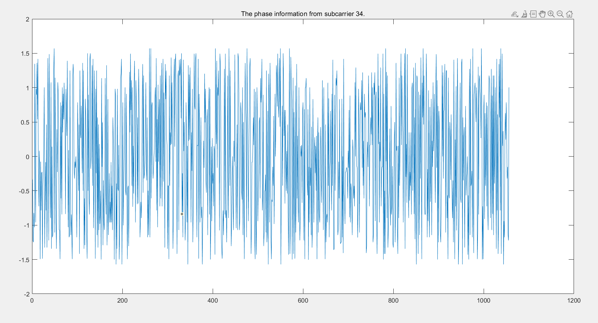
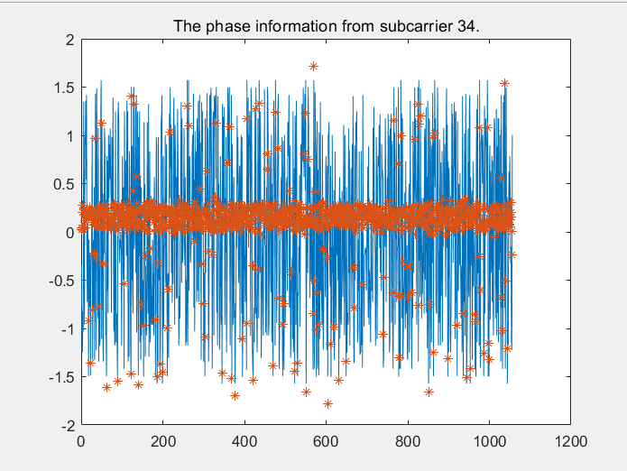

Phase sanitization
Random phase problem
The phase of CSI is available from the ESP32, but they can not used for the liquide indentify directly. In fact, the phase information from the ESP32's CSI data is very random. The typcial phase we extract from CSI like the picture following.

This experiment is meant to measure the phase and rssi baseline of AIR. And we only focus on subcarrier 34. The result is supposed stable around a certain value. The result, however, is waving from 1.5 to -1.5 which is $$ \pi /2$$ to $-\pi/2$. The raw phase information, therefore, is useless for liquid indentification.
Phase denoise
The random phase problem is due to the random noise and unsynchronized timing between transmitter and receiver. People use a equation to denote the CSI phase noise.
RawCSI=RealCSI+$2\pi$$\frac{m_i}{N}$$\Delta$t+$\beta$+Z
In this model, the $\Delta$t is the time lag between transmitter and receiver. The $\beta$ is the unknown phase offset, $m_i$ is the subcarrier indices for i=1 to 56, and the N is the FFT size from IEEE 802.11n specification. In our project, all the data is discrete, so N=64. It's impossible to know the $\Delta$t and $\beta$, but we can implement a linear transformation on the raw phase to remove the terms of $\Delta$t and $\beta$.
For a single measurement the $\Delta$t and $\beta$ is a constant. Therefore, we can get the slope of phase and the offset across the entire frequency band to remove them.
k=$\frac{RawCSI_{56}-RawCSI_{1}}{m_{56}-m_{1}}$, b=$\frac{1}{56}$$\sum_{x=1}^{56}RawCSI_i$
The calibrated phase is:
$DenoiseCSI_i$=$RawCSI_i$-$km_i$-$b$
After implement this algorithm, we can have a useable CSI phase information.
